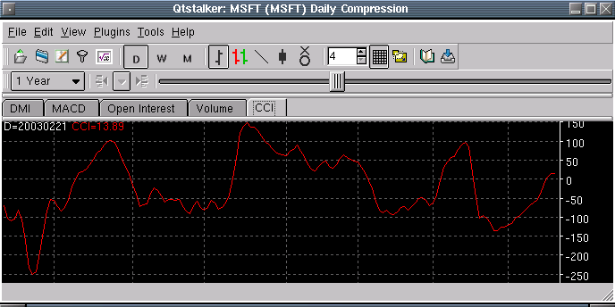

Commodity Channel Index - CCI

Parameters:
- Color - CCI plot color
- Line Type - The type of plot to draw
- Label - The text to identify the CCI plot
- Deviation - Standard deviations to use
- Period - The period used for the CCI
- Smoothing - The period used for smoothing the CCI
- Smoothing Type - The type of MA to use for smoothing the CCI
- Alert Type - The type of alert rule (see Alerts below)
Description:
Alerts:
- 100 Rule - The 100/-100 threshold level is used for alerts
- 0 Rule - The 0 threshold level is used for alerts